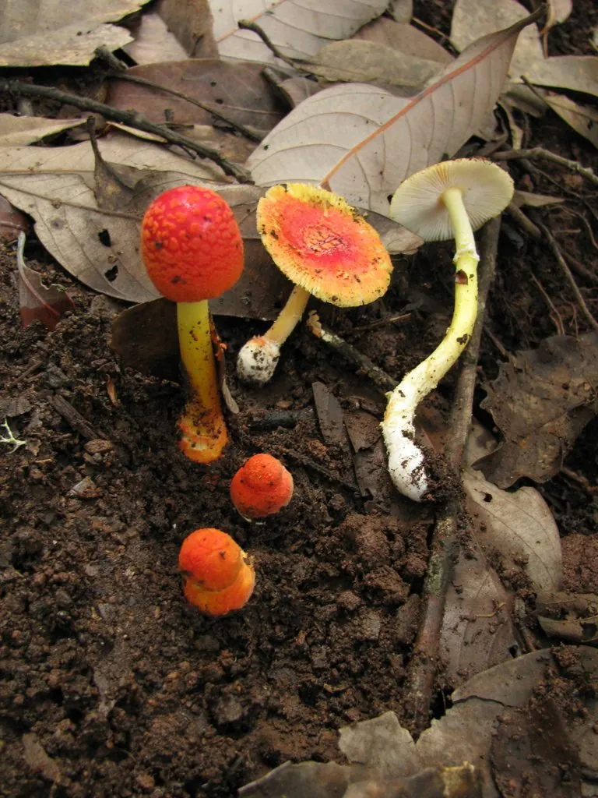

真菌 · 真菌界
红托鹅膏 Amanita rubrovolvata

菌盖呈红褐色、菌柄和菌托带橙红色斑纹的小型鹅膏，含有鹅膏毒肽，误食可致严重中毒，严禁采食。
- 分类
- 门担子菌门纲伞菌纲目伞菌目科鹅膏科属鹅膏属
- 栖息环境
- 针叶林和阔叶林的地面，与松树、栎树形成外生菌根
- 地理分布
- 中国南方和西南林区，东亚其他地区也有分布
- 保护级别
- 暂无评估（IUCN 未评估，有毒物种）
物种志
红托鹅膏是担子菌门伞菌目的剧毒真菌，子实体小型，单生或群生。菌盖呈半球形至平展，直径 2–6 cm，表面橙红色至红褐色，密布橙红色至淡黄色的粉末状鳞片；菌褶白色，离生；菌柄细长，橙黄色至淡黄色，基部膨大并带橙红色菌托，菌环不明显；孢子印白色。
红托鹅膏与松树、栎树等树木形成外生菌根，多生于针叶林和阔叶林的地面，夏秋季出菇，在中国南方和西南林区有分布。它含有鹅膏毒肽，误食后可能引起肝肾损伤，属于严禁采食的剧毒菌。它体形小、颜色鲜艳，容易被误认为无毒的野生菌，因此在野外看到颜色鲜艳的小型鹅膏菌时，应一律坚决不采不食。
形态与习性
- 菌盖直径 2–6 cm，橙红色至红褐色，带粉末状鳞片
- 菌褶白色，离生
- 菌柄细长，橙黄色，基部带橙红色菌托
- 孢子印白色
- 毒性含鹅膏毒肽，可致肝肾损伤
- 辨识小型鲜艳鹅膏，严禁采食
趣味知识
- 红托鹅膏体形小、颜色鲜艳，容易被误认为无毒的野生菌。
- 它含有鹅膏毒肽，误食后可能引起肝肾损伤。
- 野外看到颜色鲜艳的小型鹅膏，应一律不采不食。